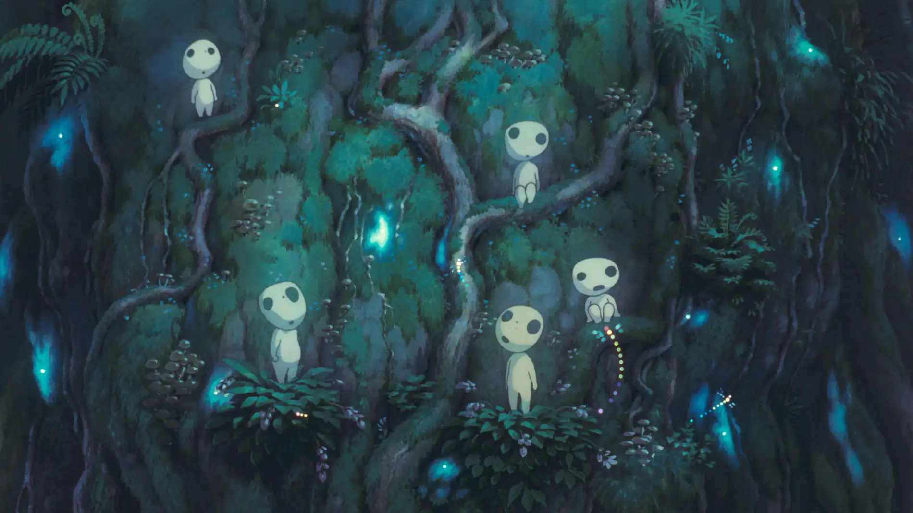

Investigar los susurros
El grupo se adentra con cuidado entre los arbustos. Descubren un pequeño espíritu del bosque atrapado en una red mágica. Al liberarlo, el espíritu les regala una bendición que los protege del peligro hasta llegar al objeto mágico.
Con renovada esperanza, continúan y logran recuperar el objeto sin problemas.
Fin de esta aventura.